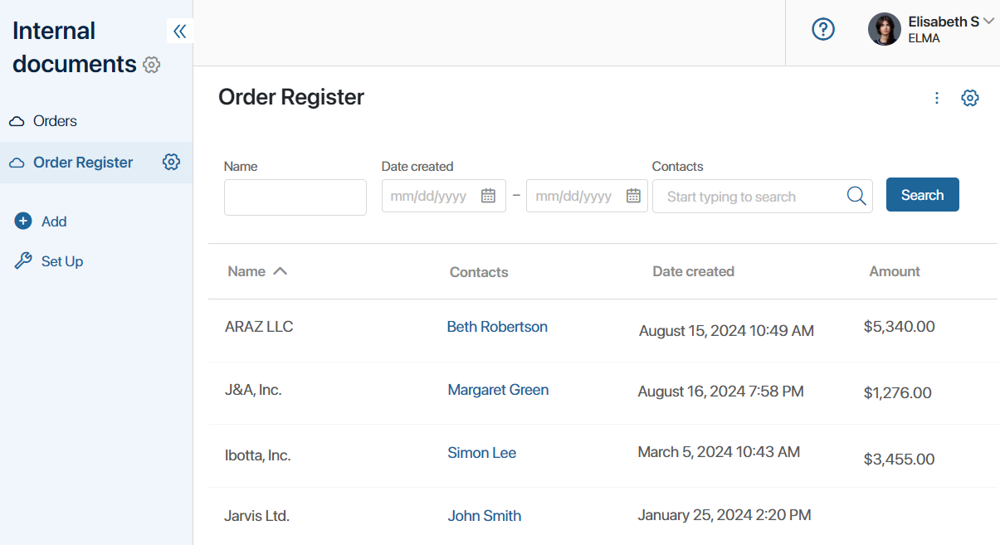
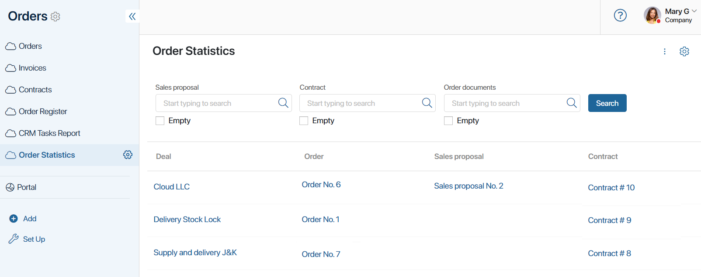

Рассмотрим объединение в отчёте источников разных типов, а также использование доступных способов их связи.
Пример объединения источников типа «Приложение – Приложение»
Рассмотрим отчёт Реестр заказов, который строится из агрегированных данных, хранящихся в трёх разных приложениях: Заказы, Договоры, Счета.
Приложения заполняются данными последовательно. Сначала создаётся договор с клиентом. Затем добавляется заказ, в котором указывается договор и клиент. После согласования договора в его карточке добавляется счёт. При этом по одному договору можно выставить несколько счетов.
В сводной таблице отчёта отобразим следующие данные из трёх приложений:
- заказ;
- компания-заказчик;
- договор на поставку заказа;
- общая сумма счетов по договору.

Рассмотрим подробнее, как создать отчёт и объединить в нём информацию из трёх приложений.
Создать отчёт по данным приложений
Для настройки отчёта выполните следующие действия:
- Создайте отчёт с названием Реестр заказов и перейдите в настройки источников.
- Нажмите кнопку + Источник данных и добавьте три приложения из разных разделов системы: Заказы, Договоры, Счета.
- Добавьте колонки таблицы, выбрав поля из источников. При этом для экспорта данных из отчёта задайте коды колонок так, чтобы они не совпадали друг с другом:
- Заказы — поля Название и Контрагент;
- Договоры — поле Название;
- Счета — поле Сумма с опцией Агрегация > Сумма. С помощью опции агрегации в таблице будет отображаться не указанное в карточке каждого счёта значение, а сумма всех счетов, выставленных по одному договору.
- Задайте дополнительные настройки таблицы: установите порядок отображения колонок и время обновления данных в отчёте.
Затем нужно задать условия отбора данных из трёх приложений и объединить их в таблице отчёта. Для этого свяжем источники между собой.
С учётом особенностей контекста источников можно применить следующие способы их связи:
- общее поле с одинаковым типом в источниках Заказы и Договоры;
- поле типа Приложение и свойство Идентификатор для источников Договоры и Счета.
Связать источники по общим полям одного типа
В отчёте для каждого заказа отображается соответствующий договор. Для этого в настройках объединим приложения Заказы и Договоры.
В оба приложения добавлено поле Компания типа Приложение. При создании заказа и договора в этом поле указывается компания-заказчик. Оно будет использоваться для связи источников в отчёте.
- Убедитесь, что для поля Компания, созданного в контексте приложений Заказы и Договоры, включена опция поиска и сортировки.
- На странице настроек источников отчёта Реестр заказов нажмите кнопку Связать источники данных.
- Заполните данные в настройках связи:
- укажите первый и второй источники — приложения Заказы и Договоры;
- выберите поле для связи — Компания;
- задайте условие объединения данных — Игнорировать все пустые. В таблицу попадут только те заказы, в которых указан договор и компания-заказчик.

Рассмотрим результат объединения данных при выборе других типов связи:
- Игнорировать пустые слева — из первого приложения-источника отбираются записи с заполненным полем для связи. В примере в таблицу попадут только те заказы, в которых указана компания, а также все договоры;
- Игнорировать пустые справа — из второго приложения-источника отбираются записи с заполненным полем для связи. В примере в таблицу попадут только те договоры, в которых указана компания, а также все заказы;
- Полное — в таблицу попадут все записи из приложений Заказы и Договоры.
- Сохраните созданную связь.
Связать источники по полям «Приложение – Идентификатор»
Чтобы улучшить сортировку данных, отобразим в отчёте Реестр заказов сумму по всем счетам, выставленным по определённому договору. Для этого объединим источники Договоры и Счета при помощи связи типа Приложение – Идентификатор.
начало внимание
Если на форме источника А есть поле типа Приложение, ссылающееся на источник Б, связь можно настроить по этому полю и системному свойству Идентификатор источника Б.
конец внимание
Рассмотрим подробнее, каким образом источники объединяются при таких настройках. У каждого элемента приложения есть уникальный код. Он присваивается при создании элемента и хранится в системном поле Идентификатор. Когда в карточке элемента приложения А указывается запись приложения Б, эти элементы связываются между собой.
При формировании отчёта соответствия между записями двух источников выявляются. Для элемента приложения А при помощи идентификатора будет найден указанный в его карточке элемент приложения Б. В таблице отчёта отобразятся связанные друг с другом записи.
В нашем примере при создании счёта в поле типа Приложение на его форме выбирается договор, заключённый с клиентом. Настроить связь можно следующим образом:
- Для поля Договор на форме приложения Счета включите опцию поиска и сортировки. Для системного поля Идентификатор опция включена по умолчанию.
- На странице настроек источников отчёта Реестр заказов нажмите кнопку Связать источники данных.
- Заполните данные в настройках связи:
- укажите первый и второй источники — приложения Счета и Договоры;
- выберите поля для связи. Для источника Счета укажите поле Договор, для приложения Договоры — поле Идентификатор;
- задайте условие объединения данных — Игнорировать все пустые. В таблице будет учитываться сумма только тех счетов, в которых указан договор.

- Сохраните созданную связь.
Страница настройки источников с установленными параметрами будет выглядеть следующим образом:

- Запустите режим отладки, чтобы проверить правильность заданного объединения источников.
- Сохраните настройки на странице.
Результат объединения приложений Заказы, Договоры и Счета по двум условиям отобразится в отчёте. В таблице можно посмотреть определённый заказ, созданный для него договор и сумму всех счетов, указанных в договоре.
Пример объединения источников типа «Приложение – Процесс»
В отчёте можно объединить контекст бизнес-процесса и приложения, с элементами которого он запускается. Например, можно создать Отчет по задачам CRM. Источниками отчёта выступают: системный процесс Звонок и приложения Сделки и Компании.
Когда с карточки сделки или компании создаётся задача типа Звонок, запускается экземпляр процесса. В его ходе задача позвонить клиенту назначается на ответственного пользователя.
В таблице отчёта отображаются свойства из контекста бизнес-процесса:
- название созданного экземпляра;
- элемент, по которому запущен процесс;
- исполнитель задачи;
- дата окончания задачи.

Рассмотрим создание и настройку такого отчёта.
Создать отчёт по данным процесса и приложений
Для настройки отчёта выполните следующие действия:
- Создайте отчёт с названием Отчет по задачам CRM и перейдите в настройки источников.
- Нажмите кнопку + Источник данных и добавьте: системный процесс Звонок, приложение Сделки, приложение Компании.
- Добавьте колонки таблицы, выбрав поля из источника Звонок:
- Название;
- Связанный элемент;
- Исполнитель;
- Сделать до.
Указанные поля добавлены в системный процесс по умолчанию. Вы можете изменять контекст задач CRM, добавлять любые пользовательские поля, а затем отображать их в отчёте. Подробнее читайте в статье «Настройка карточек задачи CRM».
Затем объединим данные в отчёте. Для этого процесс-источник Звонок по отдельности связывается с приложениями-источниками Сделки и Компании. Связь выполняется с помощью способа Произвольное приложение – Идентификатор.
Связать источники по полям «Произвольное приложение – Идентификатор»
Принцип объединения источников при связи Произвольное приложение – Идентификатор похож на способ связи Приложение – Идентификатор.
Процесс Звонок можно запускать по нескольким приложениям системы. Для указания элемента в контексте процесса используется поле с типом Произвольное приложение. Оно будет использоваться в отчёте в качестве поля для связи со стороны первого источника.
Связанный с каждым экземпляром процесса элемент должен выявляться и отображаться в таблице. Для этого у второго источника полем для связи выступает системное свойство Идентификатор, т. е. уникальный код элемента.
Поочередно настроим связь процесса с каждым из приложений. Это выполняется одинаковым образом:
- На странице настроек источников нажмите кнопку Связать источники данных.
- Заполните данные в настройках связи:
- укажите первый и второй источники — процесс Звонок и приложение Сделки;
- выберите поля для связи. Для источника Звонок укажите поле Связанный элемент, для приложения Сделки — поле Идентификатор;
- задайте условие объединения данных — Игнорировать пустые справа. В таблице отобразятся только экземпляры процесса, запущенные по сделке.
- Сохраните созданную связь.
- Таким же способом добавьте связь между процессом Звонок и приложением Компании.
Страница с настроенными источниками и связями между ними будет выглядеть следующим образом:

Перед сохранением отчёта его можно посмотреть в режиме отладки.
- Сохраните настройки на странице.
В результате объединения в отчёте процесса Звонок с приложениями Сделки и Компании в таблице отобразится: задача позвонить клиенту, элемент, в котором она создана, ответственный менеджер и срок её выполнения.
Пример объединения источников типа «Процесс – Процесс»
В отчёте можно отобразить данные из нескольких бизнес-процессов, объединив их между собой с помощью свойств из их контекста. Значения свойств, вынесенных в таблицу отчёта, могут заполняться по мере выполнения задач в процессе.
Рассмотрим объединение процессов Обработка сделки и Оформление заказа в отчёте Статистика по заказам.
Предположим, что в компании принят порядок работы, при котором пользователи добавляют сделку и запускают процесс её обработки. В его ходе менеджер определяет потребность клиента и проводит работу по прогреву заказчика. Также менеджер создаёт коммерческое предложение, которое хранится в процессе в свойстве типа Приложение.
Когда клиент готов к покупке, менеджер запускает процесс Оформление заказа. В его ходе заказ создаётся и проходит все этапы обработки. К каждому заказу прикрепляется коммерческое предложение, добавленное для сделки, а также формируется пакет дополнительных документов: договор, дополнительные соглашения, счета. В процессе все документы добавляются в свойство типа Произвольное приложение в виде отдельных элементов.
В таблице отчёта Статистика по заказам можно объединить два бизнес-процесса и отобразить свойства из их контекста:
- сделка;
- коммерческое предложение;
- заказ;
- договор.
Детали сделки и заказа заполняются в ходе выполнения процессов, поэтому в таблицу отчёта данные будут добавляться постепенно.

Создать отчёт по данным двух процессов
Для настройки отчёта выполните следующие действия:
- Создайте отчёт с названием Статистика по заказам и перейдите в настройки источников.
- Нажмите кнопку + Источник данных и добавьте процессы: Обработка сделки и Оформление заказа.
- Добавьте колонки таблицы, выбрав поля из источников:
- процесс Обработка сделки — поля Сделка, Коммерческое предложение;
- процесс Оформление заказа — поля Заказы, Договор.
Затем процессы-источники объединяются с помощью одинакового коммерческого предложения из их экземпляров. Используется способ связи Приложение – Произвольное приложение.
Связать источники по полям «Приложение – Произвольное приложение»
В процессе Обработка сделки создаётся элемент приложения Коммерческое предложение и добавляется на форму сделки в свойство типа Приложение. Это свойство будет выступать в качестве поля для связи из первого источника.
В ходе процесса Оформление заказа создаются элементы приложений Договоры, Счета, Дополнительные соглашения. Вместе с коммерческим предложением все эти документы хранятся в контексте процесса в свойстве Документы по заказу с типом Произвольное приложение. Оно будет использоваться в отчёте как поле для связи из второго источника.
По указанному в ходе процесса коммерческому предложению в таблице отчёта для каждой сделки будет выявляться соответствующий заказ.
Чтобы настроить связь двух процессов-источников, выполните следующие шаги:
- На странице настроек источников нажмите кнопку Связать источники данных.
- Заполните данные в настройках связи:
- укажите первый и второй процессы-источники — Обработка сделки и Оформление заказа;
- выберите поля для связи. Для источника Обработка сделки укажите поле Коммерческое предложение, для источника Оформление заказа — поле Документы по заказу;
- задайте условие объединения данных — Игнорировать пустые справа. В отчёт попадут все экземпляры процесса Обработка сделки, даже если по определённой сделке ещё не оформлен заказ.
- Сохраните созданную связь.
Страница настроек источников будет выглядеть следующим образом:
В режиме отладки можно посмотреть, как будет выглядеть настроенный отчёт.
- Сохраните настройки на странице.
В результате в отчёте Статистика по заказам будут отображаться ссылки на элементы приложений, созданные в ходе процессов Обработка сделки и Оформление заказа. Из таблицы можно перейти в карточку сделки, заказа, коммерческого предложения и договора. Данные будут добавляться по мере выполнения процессов.